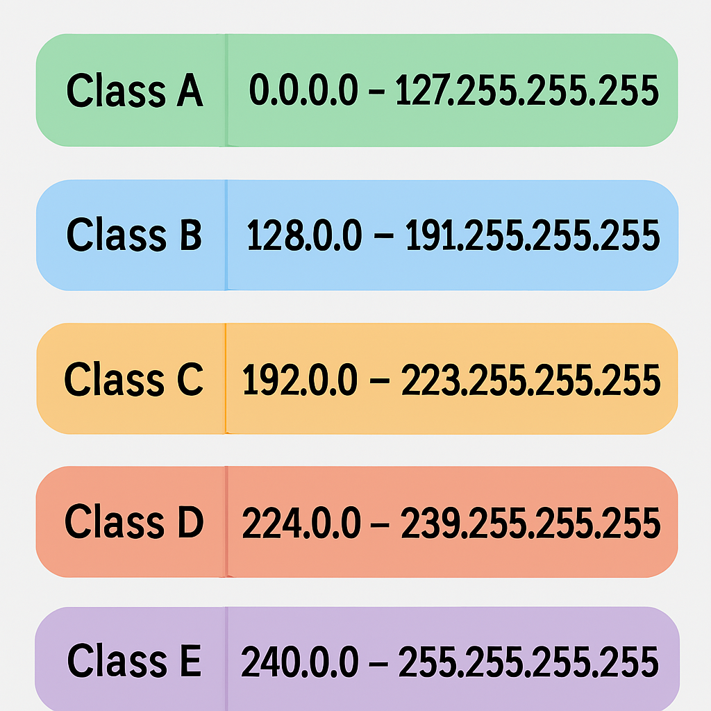

عنونة IP وتقسيم الشبكات
مقدمة في عنونة IP

عنوان بروتوكول الإنترنت (IP Address) هو رقم تعريفي فريد يُعيَّن لكل جهاز متصل بشبكة تستخدم بروتوكول الإنترنت للاتصال. يعمل عنوان IP كعنوان منزل في العالم المادي، حيث يسمح بتحديد موقع الجهاز وتوجيه البيانات إليه عبر الشبكة.
تُستخدم عناوين IP لتحقيق هدفين رئيسيين:
- تحديد الواجهة الشبكية للجهاز: يعمل كمعرف فريد للجهاز على الشبكة.
- تحديد موقع الجهاز: يساعد في توجيه البيانات عبر الشبكة إلى الوجهة الصحيحة.
شكل توضيحي لمفهوم عنوان IP وكيفية استخدامه لتحديد الأجهزة وتوجيه البيانات.
إصدارات بروتوكول IP
يوجد إصداران رئيسيان من بروتوكول IP قيد الاستخدام حاليًا:
1. بروتوكول الإنترنت الإصدار الرابع (IPv4)
IPv4 هو الإصدار الأكثر استخدامًا حتى الآن، ويستخدم عناوين بطول 32 بت، مما يسمح بوجود حوالي 4.3 مليار عنوان فريد. يتم تمثيل عناوين IPv4 بأربعة أرقام (من 0 إلى 255) مفصولة بنقاط، مثل: 192.168.1.1
2. بروتوكول الإنترنت الإصدار السادس (IPv6)
IPv6 هو الإصدار الأحدث، وتم تطويره لمعالجة مشكلة نفاد عناوين IPv4. يستخدم عناوين بطول 128 بت، مما يوفر عددًا هائلاً من العناوين (2^128، أو حوالي 340 تريليون تريليون تريليون). يتم تمثيل عناوين IPv6 بثمانية مجموعات من الأرقام الست عشرية مفصولة بنقطتين، مثل: 2001:0db8:85a3:0000:0000:8a2e:0370:7334
في هذا الدرس، سنركز بشكل أساسي على IPv4 نظرًا لانتشاره الواسع، مع الإشارة إلى IPv6 عند الضرورة.
بنية عنوان IPv4
يتكون عنوان IPv4 من 32 بت، مقسمة إلى أربعة أوكتيتات (ثمانية بتات لكل أوكتيت). يتم تمثيل كل أوكتيت كرقم عشري من 0 إلى 255، مفصولة بنقاط.
على سبيل المثال، العنوان 192.168.1.1 يمكن تمثيله بالصيغة الثنائية كالتالي:
11000000.10101000.00000001.00000001
ينقسم عنوان IP إلى جزأين:
- معرف الشبكة (Network ID): يحدد الشبكة التي ينتمي إليها الجهاز.
- معرف المضيف (Host ID): يحدد الجهاز المحدد داخل تلك الشبكة.
يتم تحديد الحد بين معرف الشبكة ومعرف المضيف باستخدام قناع الشبكة الفرعية (Subnet Mask).
قناع الشبكة الفرعية (Subnet Mask)
قناع الشبكة الفرعية هو رقم 32 بت يستخدم لتحديد أي جزء من عنوان IP يمثل معرف الشبكة وأي جزء يمثل معرف المضيف. يتكون من سلسلة متصلة من البتات "1" متبوعة بسلسلة من البتات "0".
عند تطبيق عملية AND المنطقية بين عنوان IP وقناع الشبكة الفرعية:
- البتات المقابلة لـ "1" في قناع الشبكة تشكل معرف الشبكة.
- البتات المقابلة لـ "0" في قناع الشبكة تشكل معرف المضيف.
على سبيل المثال، إذا كان لدينا عنوان IP 192.168.1.1 وقناع شبكة فرعية 255.255.255.0 (أو /24 بصيغة CIDR):
عنوان IP: 11000000.10101000.00000001.00000001 (192.168.1.1)
قناع الشبكة: 11111111.11111111.11111111.00000000 (255.255.255.0)
------------------------------------ (AND)
معرف الشبكة: 11000000.10101000.00000001.00000000 (192.168.1.0)
معرف المضيف: 00000000.00000000.00000000.00000001 (0.0.0.1)
في هذا المثال، معرف الشبكة هو 192.168.1.0، ومعرف المضيف هو 1.
تمثيل قناع الشبكة الفرعية
يمكن تمثيل قناع الشبكة الفرعية بطريقتين:
- الصيغة العشرية المنقطة: مثل 255.255.255.0
- صيغة CIDR (Classless Inter-Domain Routing): تستخدم الرمز "/" متبوعًا بعدد البتات "1" في قناع الشبكة، مثل /24
الجدول التالي يوضح بعض أقنعة الشبكة الفرعية الشائعة:
| صيغة CIDR | الصيغة العشرية المنقطة | عدد المضيفين المتاحين |
|---|---|---|
| /8 | 255.0.0.0 | 16,777,214 |
| /16 | 255.255.0.0 | 65,534 |
| /24 | 255.255.255.0 | 254 |
| /28 | 255.255.255.240 | 14 |
| /30 | 255.255.255.252 | 2 |
ملاحظة: عدد المضيفين المتاحين = 2^(عدد بتات المضيف) - 2، حيث نطرح 2 لاستبعاد عنوان الشبكة وعنوان البث.
فئات عناوين IP
تم تقسيم عناوين IPv4 تاريخيًا إلى خمس فئات (A, B, C, D, E) بناءً على قيمة البتات الأولى من العنوان. على الرغم من أن هذا التقسيم أصبح أقل أهمية مع ظهور CIDR، إلا أنه لا يزال مفيدًا لفهم تخصيص عناوين IP.
الفئة A (Class A)
- نطاق العناوين: 1.0.0.0 إلى 126.255.255.255
- البت الأول: 0
- قناع الشبكة الافتراضي: 255.0.0.0 (/8)
- عدد الشبكات: 126
- عدد المضيفين لكل شبكة: 16,777,214
الفئة B (Class B)
- نطاق العناوين: 128.0.0.0 إلى 191.255.255.255
- البتان الأولان: 10
- قناع الشبكة الافتراضي: 255.255.0.0 (/16)
- عدد الشبكات: 16,384
- عدد المضيفين لكل شبكة: 65,534
الفئة C (Class C)
- نطاق العناوين: 192.0.0.0 إلى 223.255.255.255
- البتات الثلاثة الأولى: 110
- قناع الشبكة الافتراضي: 255.255.255.0 (/24)
- عدد الشبكات: 2,097,152
- عدد المضيفين لكل شبكة: 254
الفئة D (Class D)
- نطاق العناوين: 224.0.0.0 إلى 239.255.255.255
- البتات الأربعة الأولى: 1110
- مخصصة للبث المتعدد (Multicast)
الفئة E (Class E)
- نطاق العناوين: 240.0.0.0 إلى 255.255.255.255
- البتات الأربعة الأولى: 1111
- محجوزة للاستخدام التجريبي
توضيح لفئات عناوين IPv4 الخمسة ونطاقات العناوين الخاصة بكل فئة.
عناوين IP الخاصة
تم تخصيص بعض نطاقات عناوين IP للاستخدام الخاص داخل الشبكات المحلية، ولا يتم توجيهها عبر الإنترنت العام. هذه العناوين تسمى عناوين IP الخاصة (Private IP Addresses).
نطاقات عناوين IP الخاصة هي:
- الفئة A: 10.0.0.0 إلى 10.255.255.255 (10.0.0.0/8)
- الفئة B: 172.16.0.0 إلى 172.31.255.255 (172.16.0.0/12)
- الفئة C: 192.168.0.0 إلى 192.168.255.255 (192.168.0.0/16)
بالإضافة إلى ذلك، هناك نطاق خاص آخر يسمى نطاق الاختبار المحلي (Link-Local):
- نطاق الاختبار المحلي: 169.254.0.0 إلى 169.254.255.255 (169.254.0.0/16)
يتم استخدام هذا النطاق عندما يفشل الجهاز في الحصول على عنوان IP من خادم DHCP.
تقسيم الشبكات (Subnetting)
تقسيم الشبكات هو عملية تقسيم شبكة كبيرة إلى شبكات فرعية أصغر. يوفر تقسيم الشبكات العديد من الفوائد، منها:
- تحسين أداء الشبكة عن طريق تقليل حركة البث.
- تحسين الأمان عن طريق عزل أجزاء من الشبكة.
- تسهيل إدارة الشبكة.
- الاستخدام الأمثل لعناوين IP.
كيفية تقسيم الشبكات
لتقسيم شبكة إلى شبكات فرعية، نقوم بزيادة عدد بتات معرف الشبكة (أو تقليل عدد بتات معرف المضيف). هذا يتم عن طريق "اقتراض" بتات من معرف المضيف واستخدامها كجزء من معرف الشبكة.
على سبيل المثال، لنفترض أن لدينا شبكة من الفئة C بعنوان 192.168.1.0/24، ونريد تقسيمها إلى 4 شبكات فرعية:
- نحتاج إلى 2 بت لتمثيل 4 شبكات فرعية (2^2 = 4).
- نقترض 2 بت من معرف المضيف، مما يجعل قناع الشبكة الفرعية /26 (24 + 2).
- قناع الشبكة الفرعية الجديد هو 255.255.255.192.
- الشبكات الفرعية الناتجة هي:
- 192.168.1.0/26 (نطاق العناوين: 192.168.1.0 - 192.168.1.63)
- 192.168.1.64/26 (نطاق العناوين: 192.168.1.64 - 192.168.1.127)
- 192.168.1.128/26 (نطاق العناوين: 192.168.1.128 - 192.168.1.191)
- 192.168.1.192/26 (نطاق العناوين: 192.168.1.192 - 192.168.1.255)
لكل شبكة فرعية، العنوان الأول هو عنوان الشبكة، والعنوان الأخير هو عنوان البث. لذلك، العناوين المتاحة للمضيفين في كل شبكة فرعية هي:
- 192.168.1.1 - 192.168.1.62 (62 مضيف)
- 192.168.1.65 - 192.168.1.126 (62 مضيف)
- 192.168.1.129 - 192.168.1.190 (62 مضيف)
- 192.168.1.193 - 192.168.1.254 (62 مضيف)
حساب عدد الشبكات الفرعية والمضيفين
يمكن حساب عدد الشبكات الفرعية وعدد المضيفين لكل شبكة فرعية باستخدام الصيغ التالية:
- عدد الشبكات الفرعية = 2^(عدد بتات الشبكة الفرعية)
- عدد المضيفين لكل شبكة فرعية = 2^(عدد بتات المضيف) - 2
حيث:
- عدد بتات الشبكة الفرعية = (طول قناع الشبكة الفرعية الجديد) - (طول قناع الشبكة الأصلي)
- عدد بتات المضيف = 32 - (طول قناع الشبكة الفرعية الجديد)
مثال عملي على تقسيم الشبكات
لنفترض أن لدينا شبكة بعنوان 172.16.0.0/16، ونريد تقسيمها إلى شبكات فرعية بحيث تحتوي كل شبكة فرعية على 1000 مضيف كحد أقصى.
- نحسب عدد بتات المضيف المطلوبة:
- 2^10 = 1024 > 1000، لذا نحتاج إلى 10 بتات للمضيف.
- نحسب طول قناع الشبكة الفرعية الجديد:
- 32 - 10 = 22، لذا قناع الشبكة الفرعية الجديد هو /22.
- نحسب عدد الشبكات الفرعية:
- عدد بتات الشبكة الفرعية = 22 - 16 = 6
- عدد الشبكات الفرعية = 2^6 = 64
- نحسب عدد المضيفين لكل شبكة فرعية:
- عدد المضيفين = 2^10 - 2 = 1022
لذا، يمكننا تقسيم الشبكة 172.16.0.0/16 إلى 64 شبكة فرعية بقناع /22، وكل شبكة فرعية يمكنها استيعاب 1022 مضيف.
تجميع الشبكات (Supernetting)
تجميع الشبكات (أو التجميع المتتالي) هو عملية عكس تقسيم الشبكات، حيث يتم دمج عدة شبكات متجاورة في شبكة واحدة أكبر. يستخدم تجميع الشبكات لتبسيط جداول التوجيه وتقليل حجمها.
لتجميع الشبكات، يجب أن تكون الشبكات متجاورة ومتتالية، وأن يكون عددها قوة من 2 (2, 4, 8, 16, ...).
مثال على تجميع الشبكات
لنفترض أن لدينا الشبكات التالية:
- 192.168.0.0/24
- 192.168.1.0/24
- 192.168.2.0/24
- 192.168.3.0/24
يمكننا تجميع هذه الشبكات الأربع في شبكة واحدة: 192.168.0.0/22
لاحظ أن:
- عدد الشبكات = 4 = 2^2، لذا نقلل طول قناع الشبكة بمقدار 2 بت.
- قناع الشبكة الجديد = 24 - 2 = 22
تطبيقات عملية لعنونة IP وتقسيم الشبكات
1. تصميم شبكة مؤسسة
لنفترض أن لدينا مؤسسة بها 5 أقسام، وكل قسم يحتاج إلى شبكة منفصلة:
- قسم الإدارة: 20 جهاز
- قسم المالية: 15 جهاز
- قسم الموارد البشرية: 10 أجهزة
- قسم تكنولوجيا المعلومات: 30 جهاز
- قسم المبيعات: 50 جهاز
يمكننا استخدام شبكة 192.168.0.0/24 وتقسيمها إلى شبكات فرعية كالتالي:
- قسم الإدارة: 192.168.0.0/27 (30 مضيف)
- قسم المالية: 192.168.0.32/27 (30 مضيف)
- قسم الموارد البشرية: 192.168.0.64/27 (30 مضيف)
- قسم تكنولوجيا المعلومات: 192.168.0.96/27 (30 مضيف)
- قسم المبيعات: 192.168.0.128/26 (62 مضيف)
2. تكوين الراوتر
عند تكوين الراوتر، نحتاج إلى تحديد عناوين IP وأقنعة الشبكة الفرعية للواجهات المختلفة. على سبيل المثال:
interface FastEthernet0/0
ip address 192.168.1.1 255.255.255.0
no shutdown
!
interface FastEthernet0/1
ip address 10.0.0.1 255.255.255.0
no shutdown
3. تكوين DHCP
عند تكوين خادم DHCP، نحتاج إلى تحديد نطاق عناوين IP التي سيتم توزيعها على الأجهزة. على سبيل المثال:
ip dhcp pool LAN
network 192.168.1.0 255.255.255.0
default-router 192.168.1.1
dns-server 8.8.8.8
أدوات حساب الشبكات الفرعية
هناك العديد من الأدوات المتاحة لمساعدتك في حساب الشبكات الفرعية، منها:
- آلات حاسبة للشبكات الفرعية عبر الإنترنت: مثل SubnetOnline.com و IPv4Calc.
- تطبيقات الهاتف المحمول: مثل "Subnet Calculator" و "IP Calculator".
- أدوات سطر الأوامر: مثل "ipcalc" في Linux.
خلاصة
عنونة IP وتقسيم الشبكات هما مفهومان أساسيان في عالم الشبكات. فهم كيفية عمل عناوين IP وكيفية تقسيم الشبكات يساعدك على تصميم وتنفيذ وإدارة الشبكات بشكل فعال.
في هذا الدرس، تعلمنا:
- مفهوم عنوان IP وأهميته.
- إصدارات بروتوكول IP (IPv4 و IPv6).
- بنية عنوان IPv4 وقناع الشبكة الفرعية.
- فئات عناوين IP والعناوين الخاصة.
- كيفية تقسيم الشبكات وحساب عدد الشبكات الفرعية والمضيفين.
- كيفية تجميع الشبكات.
- تطبيقات عملية لعنونة IP وتقسيم الشبكات.
في الدرس القادم، سنتعمق أكثر في مفاهيم التوجيه وكيفية عمل بروتوكولات التوجيه المختلفة.